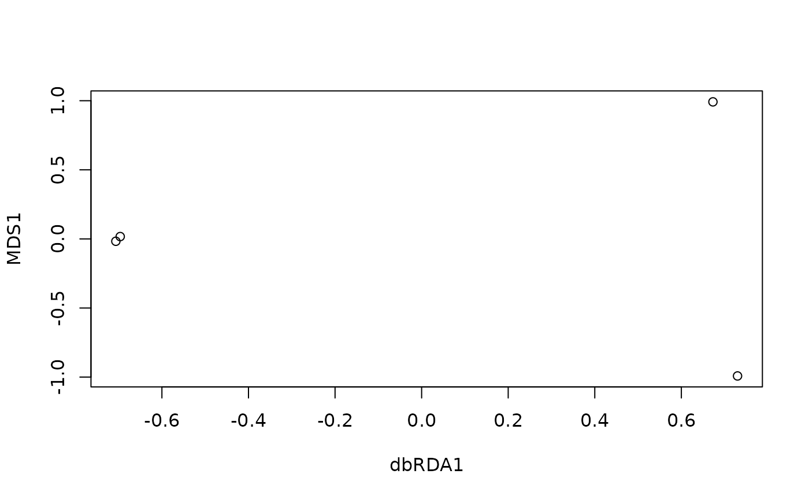

Constrained ordination of samples from their distances: the axes of beta
diversity that sample metadata explain. Gives the same results as
vegan::dbrda(), without ever forming an \(n \times n\) matrix,
so it takes far less time and memory for large datasets. capscale() is
the same analysis of the distances' positive eigenvalues only, as in
vegan::capscale().
Usage
dbrda(dm, groups, data = NULL, formula = NULL, n_axes = 3L, cpus = n_cpus())Arguments
- dm
A
distobject, such as frombeta_div()orbray(), or a symmetric numeric matrix of distances. Must not containNAs or negative values. Alternatively, as invegan::dbrda(), a formula with the distances on its left-hand side and the constraints on its right, such asdm ~ treatment, in place ofdmandformula; the metadata may then be given second, as indbrda(dm ~ treatment, meta).- groups
The one variable that constrains the ordination: a vector or factor with one value per sample, matched to the samples in
dmby name when both are named, else in the same order asdm. Or, whendatais given, the name of one of its columns (or a vector with one value per row ofdata). Categories (factor, character, or logical) or a numeric covariate. The same asformula = ~ groups. Givegroupsorformula, not both.- data
Sample metadata: a data frame with one row per sample, holding the columns named in
groupsorformula. Rows are matched to the samples indmby row name, and rows for other samples are ignored; without row names, they must be in the same order asdm. Default:NULL.- formula
Instead of
groups, for models of several variables: a one-sided formula naming the variables indatathat constrain the ordination, such as~ treatment + ph. Factors, numeric covariates, and interactions are all allowed. Wrap variables inCondition()to remove their effect first (a partial analysis), as invegan::dbrda():~ treatment + Condition(site). With onlyCondition()terms, the result is the unconstrained ordination after removing their effect. A left-hand side, if given, is ignored. Givegroupsorformula: there is no default model. Default:NULL.- n_axes
The number of axes to return. Default:
3. Reduced, with a warning, to the number of axes with positive eigenvalues, which is at most \(n - 1\) for \(n\) samples.- cpus
How many parallel processing threads should be used. The default,
n_cpus(), is the CPU cores this R process may use, within any limits set on it. Results are the same for anycpus.
Value
A numeric matrix with one row per sample and one column per axis,
as described in "Ordination result" below. Constrained axes come first,
named "dbRDA1", "dbRDA2", etc. If the constraints give fewer than n_axes
of them, unconstrained axes follow, named "MDS1", "MDS2", etc. The
values are vegan's site scores ("wa" scores, scaling 2): what
vegan::scores(x, display = "sites") returns and what
phyloseq::plot_ordination() plots. Its attributes are:
method:"dbrda".eig: The eigenvalue of each axis.prop: The proportion of the inertia that each axis explains, not counting the conditional inertia:eig / (trace - inertia[["conditional"]]).vegan's "Proportion Explained".trace: The total inertia: the sum of all eigenvalues of the unconstrained ordination, including negative ones. On the same scale aseig; see "Scale" below for how it relates topcoa()'s.inertia: The total inertia split into three parts, which add up totrace: a named vector ofconditional: explained by theCondition()variables (0if there are none);constrained: explained by the constraints, after the conditions (the sum of all constrained eigenvalues);unconstrained: the rest.
constrained_eig: Every non-zero constrained eigenvalue, including negative ones.r_squared: The proportion of the total inertia that the constraints explain,inertia[["constrained"]] / trace: PERMANOVA's \(R^2\) for the same model (permanova()), andvegan::RsquareAdj(x)$r.squared.adj_r_squared:r_squaredadjusted for the number of constraint columns \(p\) (after dropping redundant ones), asvegan::RsquareAdj(x)$adj.r.squared: \(1 - (1 - R^2)(n - 1) / (n - p - 1)\). With conditions, of \(q\) columns explaining a proportion \(R^2_c\) oftrace, it is the adjusted \(R^2\) of constraints and conditions together less that of the conditions alone (Peres-Neto et al. 2006).NAwhen the model leaves no residual degrees of freedom (\(n - p - q - 1 = 0\)).biplot: Biplot scores of the constraints: one row per column of the model matrix and one column per axis (0for unconstrained axes).vegan::scores(x, display = "bp").centroids: The centroid of each factor level on each axis, asvegan::scores(x, display = "cn"), orNULLif no variable is a factor.
Details
Method
With \(A\) the matrix of squared distances and \(J\) the centering
matrix, db-RDA (McArdle & Anderson 2001) analyzes Gower's centered matrix
\(G = -\frac{1}{2}JAJ\). With \(H\) the projection onto the (centered)
constraints, after removing any conditions, the constrained axes are the
eigenvectors of \(HGH\), and the unconstrained axes are those of
\((I-H)G(I-H)\). Non-Euclidean distances, such as Bray-Curtis, can give
negative eigenvalues. They are kept in the inertia, as vegan::dbrda()
does, but have no axes.
vegan::dbrda() forms \(G\) and \(HGH\) in full and computes all
\(n\) of their eigenvalues, which takes time proportional to \(n^3\).
dbrda() instead projects \(G\) onto an orthonormal basis of the
constraints, which only needs a few products of \(G\) with vectors,
computed in parallel straight from dm, and a small eigenproblem with one
row per constraint column. Unconstrained axes are only computed when
needed, by block Lanczos iteration as in pcoa().
dbrda() or capscale()?
capscale() analyzes \(G_+\), the part of \(G\) with positive
eigenvalues, where dbrda() analyzes all of \(G\). For Euclidean
distances (such as Euclidean, Hellinger, or Aitchison distances) \(G\)
has no negative eigenvalues, and the two give the same results, apart
from the axis names. For others, such as Bray-Curtis:
dbrda()analyzes the distances as they are. Itsr_squaredis PERMANOVA's, and it is fast for any number of samples. But some constrained eigenvalues can be negative, and these have no axes.capscale()analyzes the closest Euclidean configuration, the principal coordinates with positive eigenvalues, so every eigenvalue is a variance. But it ignores the negative eigenvalues' part of the distances, and it needs all of the eigenvalues of \(G\), which takes time proportional to \(n^3\).
phyloseq::ordinate(method = "CAP") calls vegan::capscale(), so its
results match capscale()'s, not dbrda()'s.
Matching vegan
dbrda() gives the same scores, eigenvalues, inertia, \(R^2\), biplot
scores and centroids as vegan::dbrda(), up to the signs of the axes.
Columns of the model matrix that are linear combinations of earlier ones
are dropped, with a message, as in vegan.
Scale
Like vegan::dbrda(), dbrda() divides the distances by
\(\sqrt{n-1}\) when any of them is 4 or more ("mean squared
distances"). That divides trace, eig, inertia and constrained_eig
by \(n-1\), but leaves prop and \(R^2\) unchanged. So for the same
dm, attr(dbrda(dm, ...), 'trace') equals attr(pcoa(dm), 'trace')
when every distance is below 4 (e.g. Bray-Curtis or Jaccard), and equals
it divided by \(n-1\) otherwise (e.g. Euclidean distances between
counts).
Axis signs and reproducibility
An eigenvector's sign is arbitrary, so different software can return
mirror images of the same axis. dbrda() flips each axis so that its
largest score in absolute value is positive, and flips the biplot scores
and centroids with it. Results are identical from run to run and for any
number of cpus.
Ordination result
Every ordination function (pcoa(), pca(), rpca(), dbrda(), capda(),
capscale(), mds(), nmds(), isomap(), tsne(), umap(), and so
dist_ord()) returns the same kind of
object: a numeric matrix with one row per sample and one column per
axis, so that it can go straight into a data frame. Rows are
named after the samples, when the input has names. Columns are named
after the method: "PCoA1", "PC1", "RPCA1", "dbRDA1" or "CAP1"
(then "MDS1" for unconstrained axes), "MDS1", "NMDS1",
"Isomap1", "TSNE1", "UMAP1", and so on.
Its attributes always begin with these three, in this order, each with one value per column:
method: The method's ID, e.g."pcoa"or"nmds".eig: Each axis's eigenvalue, on the method's own scale:pcoa()andisomap()give the eigenvalues of Gower's centered matrix (sums of squares);pca()andrpca()give variances, which arepcoa()'s divided by \(n - 1\) for \(n\) samples; anddbrda()andcapscale()followvegan, which also divides by \(n - 1\) when any distance is 4 or more.NAformds(),nmds(),tsne(), andumap(), which have no eigenvalues.prop: The proportion of the total variance (or inertia) that each axis explains. Unlikeeig, it is comparable between methods, so use it to label axes.NAwhere it isn't defined.
Attributes particular to the method follow them, and last display,
with the ordination's title for plot() and print(): the method's
name, and for the methods that take distances, the distance matrix's
title, such as "Principal Coordinates Analysis of Bray-Curtis
Dissimilarity" (see ecodive_display). The matrix has class
"ecodive_ord" (as well as "matrix"), so that print() lists the
other attributes by name rather than in full, and plot() draws the
samples on the first two axes, labelled from the attributes, with any
loadings, constraints and centroids on top (see plot.ecodive_ord()).
plot(ord, "Species", iris) colours the samples by a column of
metadata. Subsetting with [, or as.data.frame(), gives a plain
matrix or data frame without the attributes.
References
McArdle, B. H., & Anderson, M. J. (2001). Fitting multivariate models to community data: a comment on distance-based redundancy analysis. Ecology, 82(1), 290-297. doi:10.1890/0012-9658(2001)082[0290:FMMTCD]2.0.CO;2
Legendre, P., & Anderson, M. J. (1999). Distance-based redundancy analysis: testing multispecies responses in multifactorial ecological experiments. Ecological Monographs, 69(1), 1-24. doi:10.1890/0012-9615(1999)069[0001:DBRATM]2.0.CO;2
Peres-Neto, P. R., Legendre, P., Dray, S., & Borcard, D. (2006). Variation partitioning of species data matrices: estimation and comparison of fractions. Ecology, 87(10), 2614-2625. doi:10.1890/0012-9658(2006)87[2614:VPOSDM]2.0.CO;2
Examples
dm <- bray(iris[, 1:4])
ord <- dbrda(dm, 'Species', iris)
plot(ord, 'Species', iris)

ord
#> # A matrix: 150 samples × 3 axes
#> # Distance-based Redundancy Analysis of Bray-Curtis Dissimilarity
#> # % of variance: 84.7, 3.2, 9.3
#> dbRDA1 dbRDA2 MDS1
#> 1 0.506 -0.249 -0.0722
#> 2 0.505 0.236 0.312
#> 3 0.556 -0.081 0.217
#> 4 0.535 0.0874 0.282
#> 5 0.528 -0.33 -0.0558
#> 6 0.411 -0.253 -0.404
#> 7 0.554 -0.253 0.103
#> 8 0.499 -0.159 -0.00276
#> 9 0.573 0.373 0.564
#> 10 0.507 0.119 0.221
#> # … 140 more samples
#> # Use print(x, n = ...) to see more samples
#> # Attributes: method, eig, prop, trace, inertia, constrained_eig, r_squared,
#> # adj_r_squared, biplot, centroids
str(ord)
#> 'ecodive_ord' num [1:150, 1:3] 0.506 0.505 0.556 0.535 0.528 ...
#> - attr(*, "dimnames")=List of 2
#> ..$ : NULL
#> ..$ : chr [1:3] "dbRDA1" "dbRDA2" "MDS1"
#> - attr(*, "method")= chr "dbrda"
#> - attr(*, "eig")= num [1:3] 2.2334 0.0839 0.2441
#> - attr(*, "prop")= num [1:3] 0.8469 0.0318 0.0926
#> - attr(*, "trace")= num 2.64
#> - attr(*, "inertia")= Named num [1:3] 0 2.32 0.32
#> ..- attr(*, "names")= chr [1:3] "conditional" "constrained" "unconstrained"
#> - attr(*, "constrained_eig")= num [1:2] 2.2334 0.0839
#> - attr(*, "r_squared")= num 0.879
#> - attr(*, "adj_r_squared")= num 0.877
#> - attr(*, "biplot")= num [1:2, 1:3] -0.275 -0.695 0.962 -0.719 0 ...
#> ..- attr(*, "dimnames")=List of 2
#> .. ..$ : chr [1:2] "Speciesversicolor" "Speciesvirginica"
#> .. ..$ : chr [1:3] "dbRDA1" "dbRDA2" "MDS1"
#> - attr(*, "centroids")= num [1:3, 1:3] 0.499 -0.141 -0.358 -0.125 0.494 ...
#> ..- attr(*, "dimnames")=List of 2
#> .. ..$ : chr [1:3] "Speciessetosa" "Speciesversicolor" "Speciesvirginica"
#> .. ..$ : chr [1:3] "dbRDA1" "dbRDA2" "MDS1"
#> - attr(*, "display")=List of 1
#> ..$ title: chr "Distance-based Redundancy Analysis of Bray-Curtis Dissimilarity"